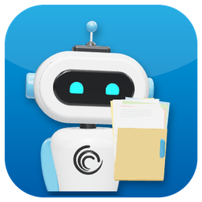
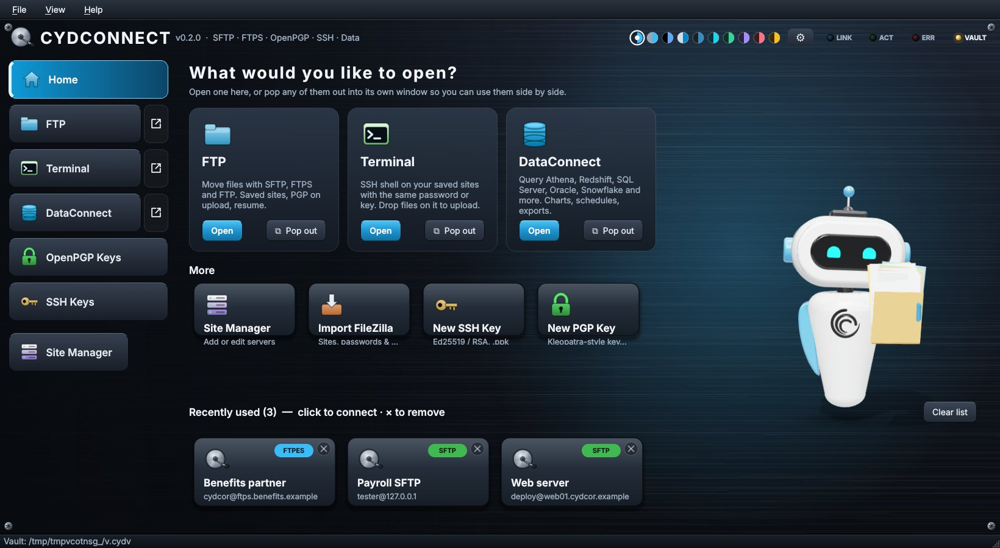

Files, SSH terminal, OpenPGP, SSH keys and data in one window.

These are screenshots of the CydConnect desktop app, taken while it ran against a real SSH server on a test machine. The terminal session, the drag-and-drop upload, the pop-out windows and DataConnect shown are live, not mock-ups.